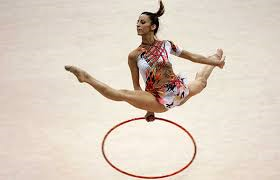

En esta imágen mostramos a otra de las grandes gimnastas a nivel internacional: Almuda Cid.
Desde nuestro punto de vista Simon Biles es la mejor gimnasta internacionalmente por diversos motivos:
- Cuenta con cinco medallas de oro y un nuevo título mundial, así se hace con 19 oros, 3 platas y 3 bronces
- En 2019 con una puntuación de 15,399 se llevó el histórico oro.
- Este deporte le ayudó a salir adelante después de que parte de su niñez le fuese arrebatada por sus padres biológicos.
- La gran cita que tiene en mente Simone Biles son los Juegos Olímpicos de Tokio 2020.
La infancia de la gimnasta estuvo marcada por la nula presencia paterna y los problemas de su madre con las drogas y el alcohol. Shanon Biles era adicta y no podía hacerse cargo de sus cuatro hijos. Fue entonces cuando su abuelo rescató a los pequeños del infierno. Los dos hermanos mayores -Tevon y Ashley, fueron a vivir con la hermana de su abuelo Roland; mientras que la propia Simone y Adria fueron acogidos por él y su segunda esposa, Nellie. "Cuando era más pequeña me preguntaba qué habría sido de mi vida si no hubiese pasado nada de esto. A veces todavía me pregunto si mi madre biológica se arrepiente y querría haber hecho las cosas de manera diferente, pero evito plantearme estas preguntas porque no las tengo que responder yo", ha llegado a asegurar la deportista a medios de su país.
Desde los 6 años, Simone Biles practica la gimnasia. El deporte le ayudó a salir adelante después de que parte de su niñez le fuese arrebatada por sus padres biológicos. Su abuelo apostó por las aptitudes de su nieta y ahora todos los sacrificios por los que tuvo que pasar la pequeña para llegar a ser la número uno han dado sus frutos. La gimnasia fue su salvavidas.
En este enlace encontrarás informaciób sobre la carrera de Simon Biles con detalle: "Simone Arianne Biles".